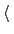
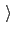
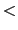

Next: Moving frame of reference.
Up: Selecting atoms for colvars:
Previous: Selecting atoms for colvars:
Contents
Index
Selection keywords
To define collective variables, atoms are usually selected by group. Each group is identified by a name that is unique in the context of the specific colvar component (e.g. for a distance component, the names of the two groups are group1 and group2).
The name is followed by a brace-delimited block of selection keywords: these may be used individually or in combination with each other, and each can be repeated any number of times.
Selection is incremental: each keyword adds the corresponding atoms to the selection, so that different sets of atoms can be combined.
However, atoms included by multiple keywords are only counted once.
Below is an example configuration for an atom group named ``atoms'', which uses an unusually varied combination of selection keywords:
atoms {
# add atoms 1 and 3 to this group (note: the first atom in the system is 1)
atomNumbers {
1 3
}
# add atoms starting from 20 up to and including 50
atomNumbersRange 20-50
# add index group (requires a .ndx file to be provided globally)
indexGroup Water
# add all the atoms with occupancy 2 in the file atoms.pdb
atomsFile atoms.pdb
atomsCol O
atomsColValue 2.0
# add all the C-alphas within residues 11 to 20 of segments "PR1" and "PR2"
psfSegID PR1 PR2
atomNameResidueRange CA 11-20
atomNameResidueRange CA 11-20
}
The resulting selection includes atoms 1 and 3, those between 20 and 50, and those in the index group called ``Water''; the indices of this group are read from the file provided by indexFile, in the global section of the configuration file.
In the current version, the colvars module does not manipulate VMD atom selections directly: however, these can be converted to atom groups within the colvars configuration string, using selection keywords such as atomNumbers.
The complete list of selection keywords available in VMD is:
-
atomNumbers 
List of atom numbers
Context: atom group
Acceptable values: space-separated list of positive integers
Description: This option adds to the group all the atoms whose numbers are in
the list. The number of the first atom in the system is 1: to convert from a VMD selection, use ``atomselect get serial''.
-
indexGroup
Name of index group to be used (GROMACS format)
Context: atom group
Acceptable values: string
Description: If the name of an index file has been provided by indexFile, this option allows to select one index group from that file: the atoms from that index group will be used to define the current group.
-
atomNumbersRange
Atoms within a number range
Context: atom group
Acceptable values: 
Starting number
-
Ending number
Description: This option includes in the group all atoms whose numbers are within the range specified. The number of the first atom in the system is 1.
-
atomNameResidueRange
Named atoms within a range of residue numbers
Context: atom group
Acceptable values:
Atom name
Starting residue
-
Ending residue
Description: This option adds to the group all the atoms with the provided
name, within residues in the given range.
-
psfSegID
PSF segment identifier
Context: atom group
Acceptable values: space-separated list of strings (max 4 characters)
Description: This option sets the PSF segment identifier for
atomNameResidueRange. Multiple values may be provided,
which correspond to multiple instances of
atomNameResidueRange, in the order of their occurrence.
This option is only necessary if a PSF topology file is used.
-
atomsFile
PDB file name for atom selection
Context: atom group
Acceptable values: UNIX filename
Description: This option selects atoms from the PDB file provided and adds them
to the group according to numerical flags in the column
atomsCol. Note: the sequence of atoms in the PDB file
provided must match that in the system's topology.
-
atomsCol
PDB column to use for atom selection flags
Context: atom group
Acceptable values: O, B, X, Y, or Z
Description: This option specifies which PDB column in atomsFile is used to determine which atoms are to be included in the group.
-
atomsColValue
Atom selection flag in the PDB column
Context: atom group
Acceptable values: positive decimal
Description: If defined, this value in atomsCol identifies atoms in atomsFile that are included in the group.
If undefined, all atoms with a non-zero value in atomsCol are included.
-
dummyAtom
Dummy atom position (Å)
Context: atom group
Acceptable values: (x, y, z) triplet
Description: Instead of selecting any atom, this option makes the group a virtual particle at a fixed position in space. This is useful e.g. to replace a group's center of geometry with a user-defined position.
Next: Moving frame of reference.
Up: Selecting atoms for colvars:
Previous: Selecting atoms for colvars:
Contents
Index
vmd@ks.uiuc.edu